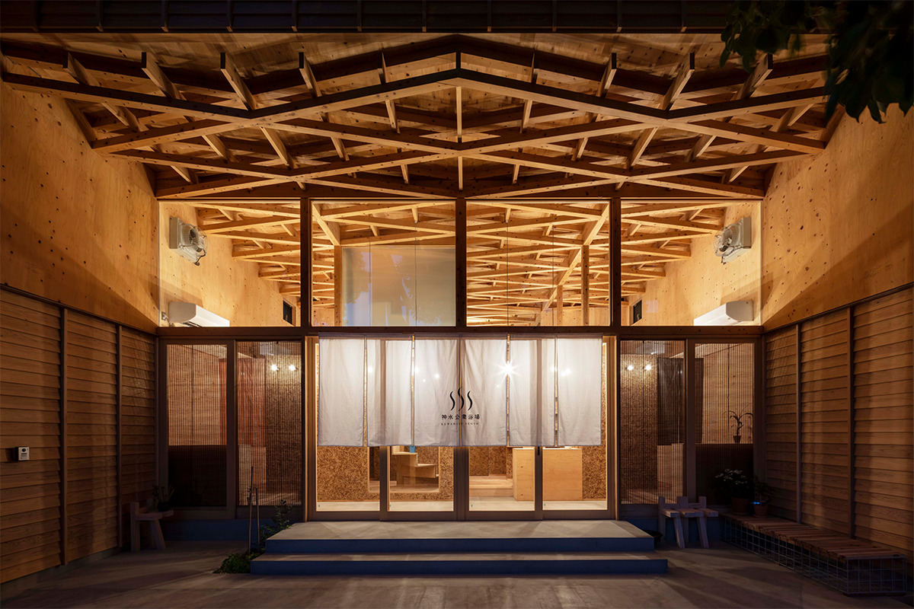
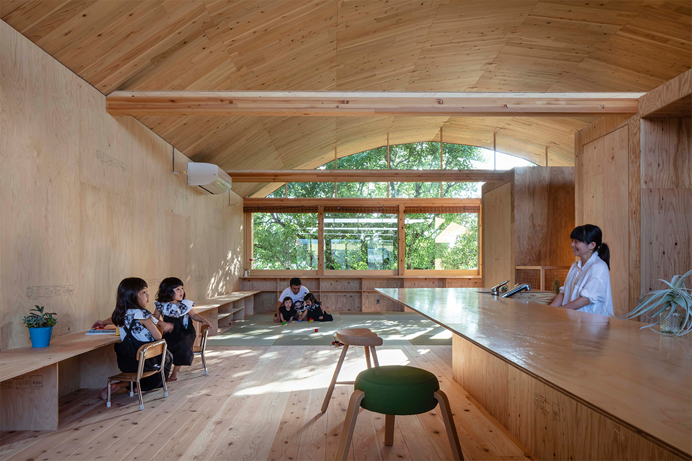
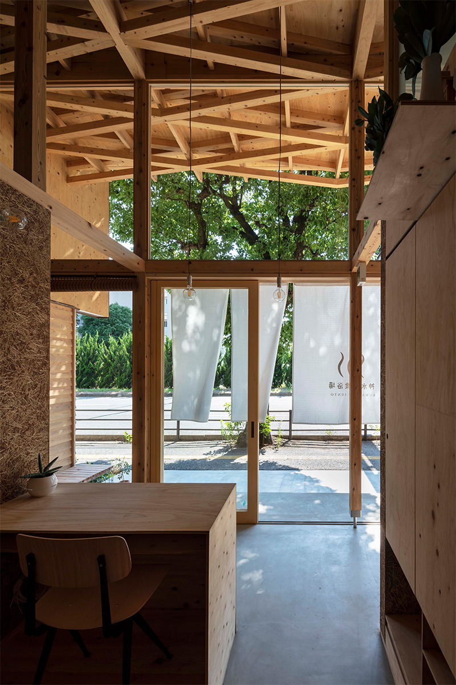
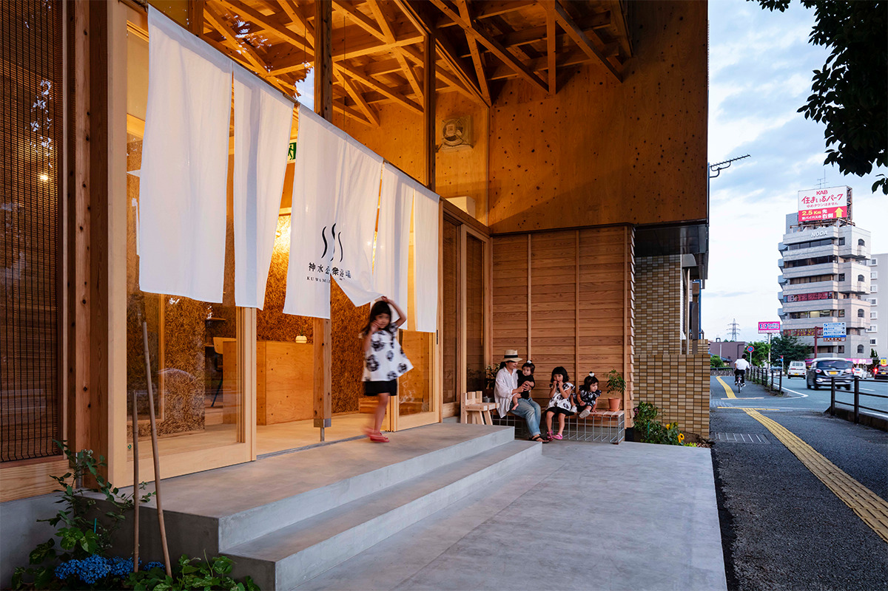
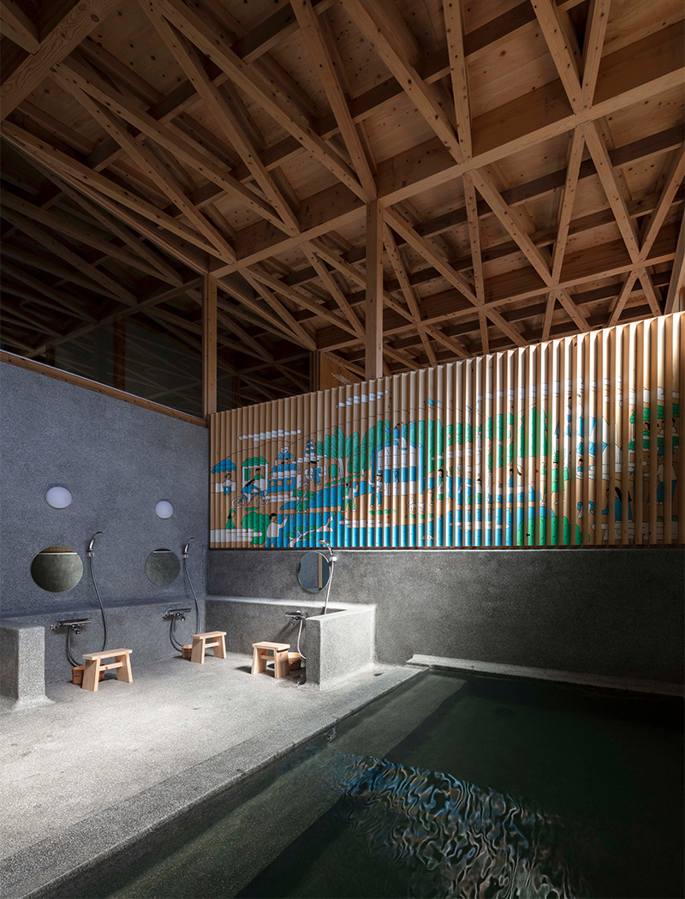
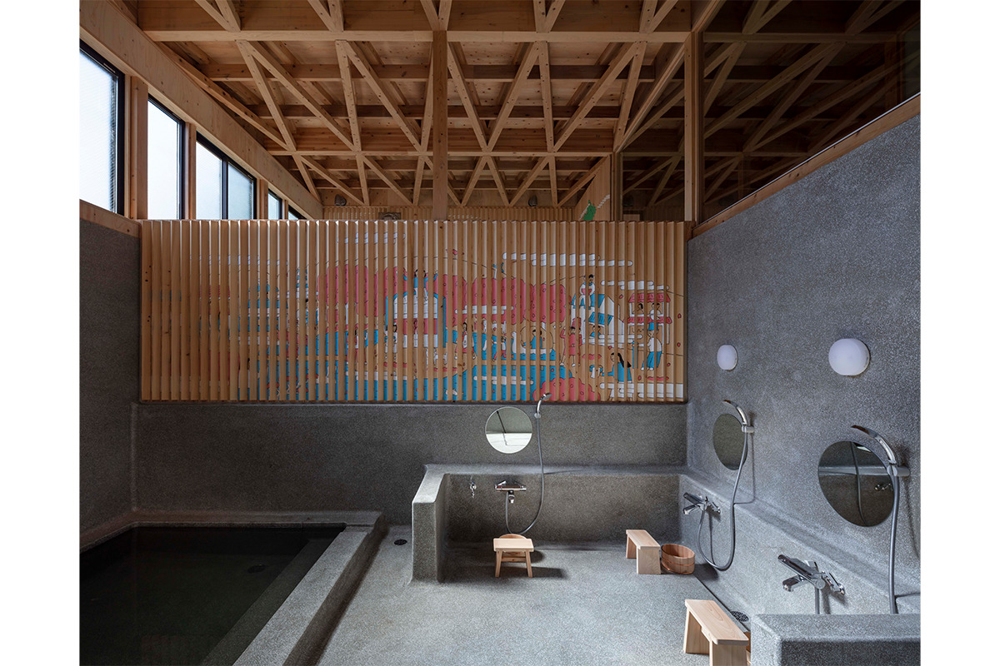

Префектура Кумамото · город Кумамото · архитектура
«Кувамидзу косю ёкудзё»: сэнто внизу, семья наверху, убежище для всего квартала

В квартале Кувамидзу города Кумамото на первом этаже жилого дома работает общественная баня. Наверху живут хозяева с четырьмя дочерьми, сэнто служит семье домашней ванной, а стойка банщика заменяет прихожую.
История
Баня как опора квартала
Хозяин бани родился и вырос в Кувамидзу. Сэнто появилось из-за землетрясения в Кумамото 2016 года: квартал сильно пострадал, многоквартирный дом, где жила семья, получил серьёзные повреждения, и пришлось переезжать.
После землетрясения вымыться было негде ни семье, ни соседям, и все натерпелись. Тогда стало понятно то, о чём давно забыли: общественная баня всегда была для района опорой на случай беды.

Когда пришло время строить новый дом, хозяин решил, что строит его не только для своей семьи и хочет что-то дать родному кварталу. Так первый этаж стал баней для всех жителей, а второй этаж превратился в жильё, которое в случае бедствия может поддержать округу.
Название
Вода, которая дала имя
Баню назвали «Кувамидзу косю ёкудзё», то есть «Общественная баня Кувамидзу», по названию квартала. Кумамото вообще богат подземной водой, а здесь родников с давних пор было особенно много, от этого места и пошло название квартала. Неподалёку лежит парк Суйдзэндзи-Эдзуко с большим озером, что для городских кварталов большая редкость.

Хозяева, муж и жена, оба инженеры-конструкторы с высшей архитектурной квалификацией, и в баню они вложили много находок, которые останавливают и любителей архитектуры, и случайных прохожих.
Архитектура
Дом, рассчитанный на два удара
Снаружи здание больше похоже на модное кафе, чем на баню. Выдаёт его только логотип на норэн, три волнистые линии: перевёрнутая «медуза», японский знак горячего источника. Проект здания хозяева заказали архитектору, известному и постройками, и работой по оживлению городских кварталов. В 2021 году баня получила золотую премию Good Design Award.

В 2016 году землю в Кумамото дважды сильно тряхнуло, поэтому, по словам хозяина, дом рассчитан выдержать два удара: первый примут стены из фанерных панелей, второй возьмут на себя потолочные решётчатые балки «касанэ-сукаси-бари». Это переосмысленный традиционный приём, знакомый по храмам и святилищам: тонкие элементы накладывают друг на друга, и конструкция становится прочной.
Дом в основном деревянный, но до высоты 2,5 м от земли он поднят на железобетоне. Так он защищён от наводнения со стороны соседнего озера: в детстве хозяин несколько раз видел, как оно выходит из берегов.

Пологая полукруглая крыша сделана из панелей CLT, многослойной клеёной древесины с перекрёстными слоями. Такие панели почти не гнутся, поэтому их подогнали друг к другу, как дощечки банной кадки, и так получили изгиб.
Деревянные детали соединены вставками «тигири» в форме барабана-цудзуми, как это делают мебельщики: ещё одна находка из опыта конструктора. Ретро-атмосфера банного зала и арочная крыша делают помещение тёплым. На стене иллюстратор из города Яцусиро нарисовал квартал Кувамидзу, каким он его себе представляет.

Вход в 2022 году стоил 350 иен для взрослых и школьников средних классов, 100 иен для младших школьников, дети до 6 лет мылись бесплатно. Если вы в Кумамото, рекомендуем зайти сюда и искупаться в этой бане.
«Кувамидзу косю ёкудзё»
- Адрес
- префектура Кумамото, город Кумамото, район Тюо, Кувамидзу, 2-2-18
- Телефон
- +81 50-1258-1556
- Часы работы
- 16:00–20:00
- Выходные
- вторник, четверг, пятница
- Цены / Вход
- взрослые (от средней школы) 350 иен, младшие школьники 100 иен, дети до 6 лет бесплатно
Фото: Сигэо Огава.